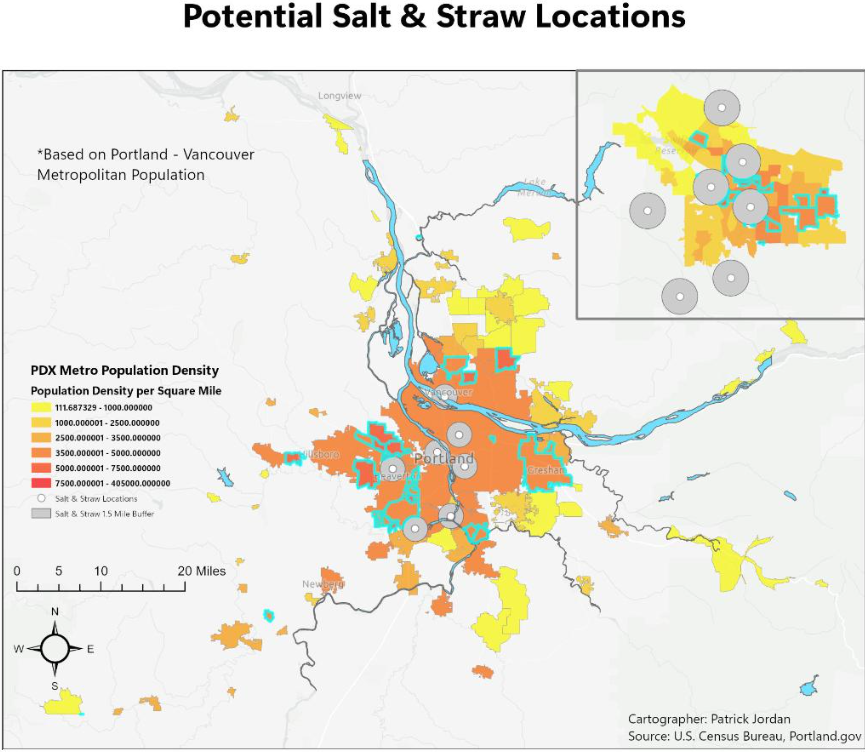
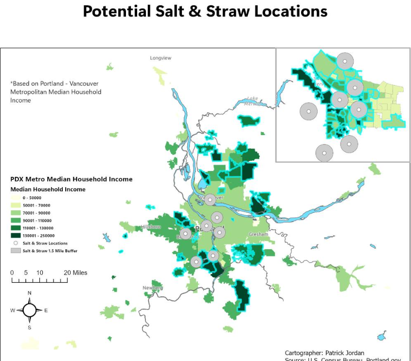

Project Overview
This project used GIS to evaluate potential locations for a new Salt & Straw store based on demographic and geographic criteria. The analysis combined population and median household income data with existing Salt & Straw locations to identify areas that could represent promising opportunities for expansion.

Population density used as one of the demographic criteria in the location suitability analysis.

Median household income used as a second demographic criterion for evaluating potential locations.
Research Question
Where within the Portland–Vancouver metropolitan area might a new Salt & Straw location be most suitable based on population, income, and proximity to existing locations?
Analytical Workflow
Demographic Analysis
Analyzed population and median household income to identify areas matching the project's suitability criteria.
Spatial Processing
Merged, clipped, joined, and queried geographic datasets to prepare the analysis layers.
Existing Locations
Geocoded existing Salt & Straw locations and evaluated their relationship to potential target areas.
Suitability Analysis
Used spatial queries, buffers, and other geoprocessing techniques to narrow potential locations.
Results
The final analysis identified Irvington and Bethany as potential areas meeting the established population and income criteria. The results demonstrate how demographic and geographic data can be combined to support location-based business decisions.

Final suitability analysis identifying areas that met the project's demographic and geographic criteria.
Key Takeaways
- GIS can translate demographic and geographic data into actionable information for business location decisions.
- Combining multiple suitability criteria provides a more useful assessment than evaluating population or income independently.
- The project provided hands-on experience with spatial queries, attribute joins, geocoding, buffering, and other ArcGIS Pro geoprocessing tools.
Interactive Project
Explore the complete StoryMap
The interactive StoryMap presents the demographic analysis, suitability criteria, maps, and final location recommendations developed for this project.
View Interactive StoryMap →